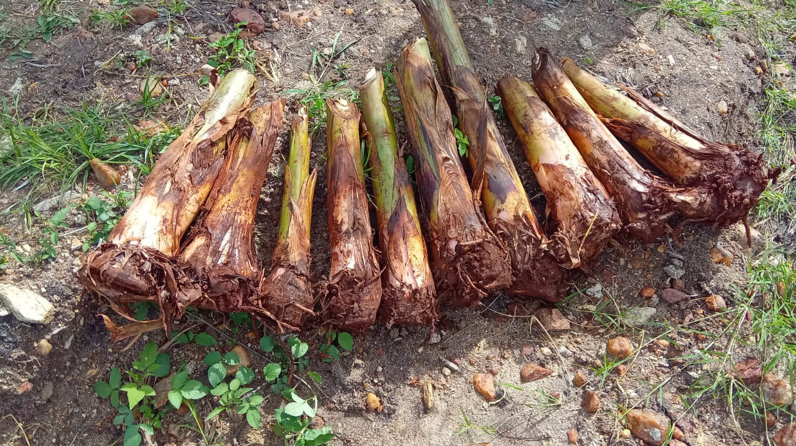
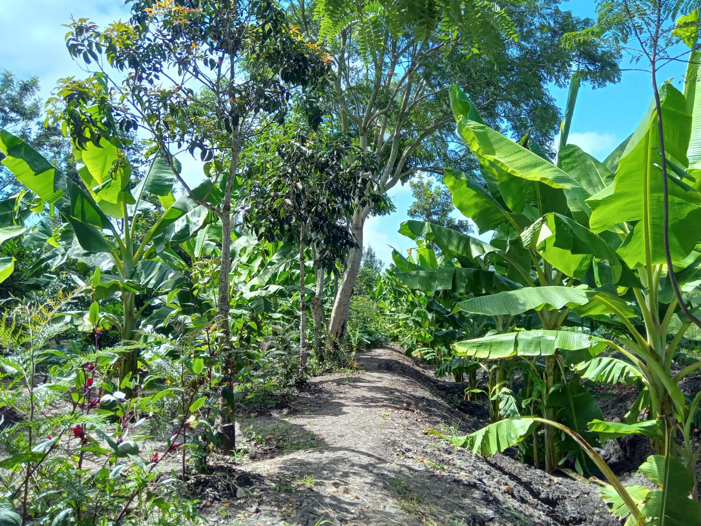
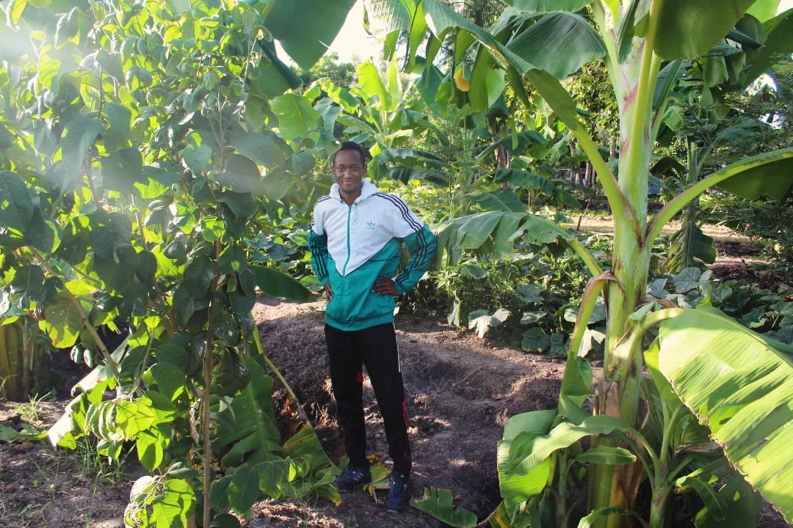
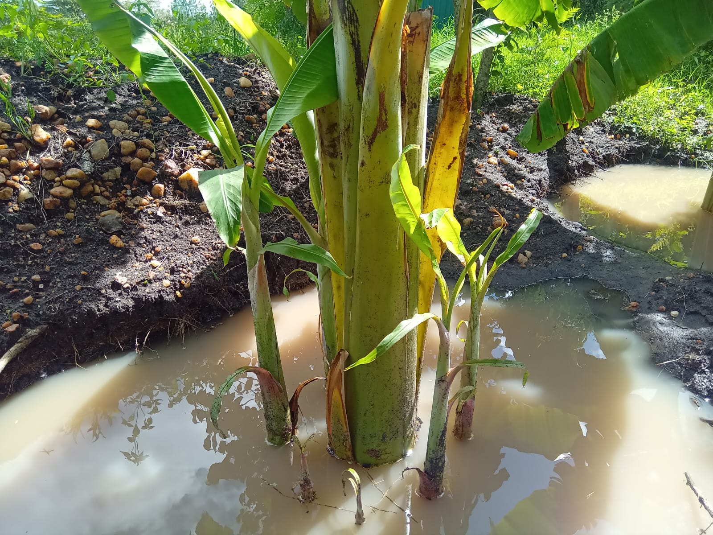

Plantain Farming Process

Healthy High Yield Congo Giant Suckers that are carefully nutrured and tendered to.

Healthy High Yield Congo Giant Suckers that are carefully nutrured and tendered to.

In Kenya, it is advised to dig a 4 ft x 4 ft squared hole with a depth of 2.5 to 4 ft to allow root travelling and water catchement, crucial for the soil.

Our plantains are carefully placed and arranged to ensure optimal growth and scenic views.

Rainy seasons can be challenging, but we ensure our plantains receive the care to thrive.

Our plantains go through blooming green stages, showcasing their vitality and potential.
Plantains typically grow in tropical climate. In Semi Arid areas this is equally suitable altitude for their success.